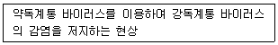
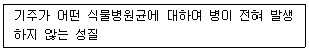

식물보호산업기사 (2020-06-06 기출문제)
1과목: 식물병리학
1. 다음 중 병원균이 기생체 침입 시 균사가 밀집해서 감염욕을 만들어 침입하는 것으로 가장 옳은 것은?
- 벼 깨시무늬병
- 뽕나무 자주날개무늬병
- 고추 탄저병
- 오이 잿빛곰팡이병
(정답률: 63%)

2. 배추 등 채소에 무름병을 일으키는 병원균으로 감염초기에 수침상을 보이다가 후기에 담갈색으로 변하여 식물체 조직이 물러지게 하는 병원균은?
- Ralstonia solanacearum
- Plasmodiophora brassicae
- streptomyces scabies
- Erwinia carotovora
(정답률: 71%)
3. 다음 중 발병되더라도 표징이 가장 잘 나타나지 않는 것은?
- 오이 흰가루병
- 토마토 잎곰팡이병
- 가지 균핵병
- 보리줄무늬모자이크병
(정답률: 74%)
4. 수박 덩굴쪼김병균이 월동하는 곳으로 가장 적절한 것은?
- 토양
- 매개곤충의 알
- 열매
- 중간기주
(정답률: 83%)
5. 1차전염원에 대한 설명으로 가장 거리가 먼 것은?
- 겨울에 병원체가 휴면상태로 월동하고, 다음해에 처음으로 감염하는 전염원이다.
- 균류에만 해당될 뿐 세균이나 바이러스는 해당되지 않는다.
- 곤충도 1차점염원의 월동자소가 될 수 있다.
- 병 방제차원에서 1차전염원의 박멸은 매우 중요하다.
(정답률: 86%)
6. 과수에 발생한 흰가루병균이 형성하는 포자의 종류는?
- 난포자
- 자낭포자
- 접합포자
- 담자포자
(정답률: 79%)
7. 다음에서 설명하는 것은?

- 기주교대
- 교차보호
- 포장위생
- 준유성교환
(정답률: 87%)
8. 소나무혹병균의 중간기주로 가장 옳은 것은?
- 민들레
- 참나무
- 흰명아주
- 향나무
(정답률: 78%)
9. 다음 중 감염된 식물체를 가축이 먹으면 가장 해로운 병으로 옳은 것은?
- 보리 붉은곰팡이병
- 벼 도열병
- 배추 모자이크병
- 콩 뿌리혹병
(정답률: 88%)
10. 담배모자이크바이러스를 N.glutinosa에 접종하였을 때 접종한 잎에서 나타나는 가장 일반적인 병징은?
- 전신적 황백화현상
- 엽색이 짙어지는 현상
- 국부 괴사반점 형성
- 잎말림 형성
(정답률: 79%)
11. 고추 역병의 병원체로 가장 옳은 것은?
- 선충
- 세균
- 바이러스
- 곰팡이
(정답률: 59%)
12. 다음에서 설명하는 것은?

- 저항성
- 면역성
- 내성
- 이병성
(정답률: 85%)
13. 대추나무 빗자루병의 전염 경로로 가장 옳은 것은?
- 병원체가 하늘소에 의하여 전염된다.
- 감염된 나무에서 수확한 종자를 심어서 전염된다.
- 파이토플라스마 병원체가 비산하여 병을 전염한다.
- 매개충인 마름무늬매미충에 의하여 병원체가 전염된다.
(정답률: 72%)
14. 다음 중 세균에 의해 나타나는 병징으로 가장 거리가 먼 것은?
- 점무늬병
- 무름병
- 모자이크병
- 시들음병
(정답률: 81%)
15. 벼 키다리병과 가장 관련이 있는 것은?
- 옥신
- 키토키닌
- 지베렐린
- 에틸렌
(정답률: 79%)
16. 녹병균의 여름포자, 녹포자의 주된 침입경로로 가장 적절한 것은?
- 피목
- 수공
- 기공
- 뿌리털
(정답률: 73%)
17. 다음 중 병원균의 병원성 변이와 가장 관련이 없는 것은?
- 돌연변이
- 교잡
- 준유성교환
- 항생
(정답률: 77%)
18. 사과나무 겹무늬썩음병을 일으키는 병원체로 가장 옳은 것은?
- 곰팡이
- 세균
- 바이러스
- 파이토플라스마
(정답률: 62%)
19. 다음 중 병원균이 이종기생균에 속하는 것으로 가장 옳은 것은?
- 오이 노균병
- 고추 탄저병
- 잣나무 털녹병
- 포도 새눈무늬병
(정답률: 76%)
20. 다음 중 병원체 크기가 가장 작은 것은?
- 세균
- 진균
- 파이토플라스마
- 바이로이드
(정답률: 89%)
2과목: 농림해충학
21. 빛에 모이는 곤충의 성질을 이용한 채집법은?
- 유아등 채집
- 쓸어잡기 채집
- 말레이즈 채집
- 떨어잡기 채집
(정답률: 89%)
22. 다음 중 벼 줄무늬잎마름병의 병원균을 매개하는 곤충으로 가장 옳은 것은?
- 애멸구
- 벼멸구
- 흰등멸구
- 번개매미충
(정답률: 76%)
23. 다음 중 외시류 곤충의 겹눈을 구성하는 낱눈수의 변화에 대한 설명으로 가장 옳은 것은?
- 약충 발육기간 중에만 증가한다.
- 변태기에만 증가한다.
- 아무런 수의 변화가 없다.
- 탈피기와 변태기에 모두 증가한다.
(정답률: 71%)
24. 다음 중 표피를 이루는 단백질, 지질, 키틴 화합물 등을 합성 분비하는 세포로 가장 적절한 것은?
- 진피세포
- 내원표피
- 외원표피
- 외표피
(정답률: 72%)
25. 다음 중 탈피 후 표피층을 경화시키는 호르몬으로 가장 옳은 것은?
- diuretic hormone
- bursicon
- eclosion
- proctolin
(정답률: 65%)
26. 솔수염하늘소의 성충이 최대로 출현하는 최성기로 가장 적절한 것은?
- 3~4월
- 4~5월
- 6~7월
- 9~10월
(정답률: 81%)
27. 다음 중 해충의 정의로 가장 적절한 것은?
- 식물을 가해하는 곤충
- 개체수가 많은 곤충
- 인간과의 관계에서 경쟁적인 곤충
- 다른 곤충을 포식하는 곤충
(정답률: 74%)
28. 다음 중 이화명나방의 암수 구별 방법으로 가장 거리가 먼 것은?
- 암컷의 빛깔은 엷다.
- 수컷은 암컷에 비해 크기가 크다.
- 암컷의 날개 센털은 3개가 있다.
- 수컷의 전연각(前緣角)은 넓다.
(정답률: 79%)
29. 곤충의 중추신경계에 속하지 않는 구조는?
- 운동신경
- 뇌
- 가슴신경절
- 식도하신경절
(정답률: 64%)
30. 다음 중 곤충 혈구의 기능으로 가장 적절하지 않은 것은?
- 식균작용
- 상처치유
- 해독작용
- 소리감지
(정답률: 80%)
31. 다음 중 내시류에 속하는 곤충으로 가장 옳은 것은?
- 물장군
- 장수풍뎅이
- 벼메뚜기
- 분홍날개대벌레
(정답률: 66%)
32. 나방류와 비슷하며 유충과 번데기 시기에 수서생활을 하는 것은?
- 강도래
- 뿔잠자리
- 날도래
- 매미
(정답률: 58%)
33. 곤충에 대한 환경요인 중 비생물적 요인으로 가장 적절하지 않은 것은?
- 기생
- 기후
- 일광
- 대기
(정답률: 80%)
34. 다음 중 곤충의 표피층에 대한 설명으로 가장 적절하지 않은 것은?
- 외표피층(epicuticle)은 수분의 증산을 억제해주는 기능을 한다.
- 기저막(basement membrane)은 일정한 모양이 없는 비세포성 연결조직이다.
- 표피세포(epidermis)는 표피를 이루는 단백질, 지질, chitin화합물 등을 합성 분비한다.
- 외원표피층(exocuticle)은 탈피과정에서 모두 소화, 흡수되어 재활용된다.
(정답률: 68%)
35. 다음 중 버즘나무 방패벌레에 대한 설명으로 가장 적절하지 않은 것은?
- 버즘나무류의 앞뒷면에 모여 흡즙 가해한다.
- 풀잠자리목에 속한다.
- 성충으로 월동한다.
- 1995년에 국내에 보고되었다.
(정답률: 69%)
36. 일반적으로 온대지방에서 1년에 1회 발생하는 해충은?
- 거세미나방
- 벼룩잎벌레
- 파총채벌레
- 땅강아지
(정답률: 64%)
37. 다음 중 고자리파리의 월동충태로 가장 적절 한 것은?
- 성충
- 유충
- 알
- 번데기
(정답률: 50%)
38. 사과 과수원에 복숭아심식나방의 성충 발생정도를 예찰하는 방법으로 가장 적절한 것은?
- 유아등
- 성페로몬 트랩
- 말레이즈 트랩
- 황색 수반 트랩
(정답률: 73%)
39. 다음 중 과변태하는 곤충으로 가장 적절한 것은?
- 하늘소
- 흰나비
- 매미
- 가뢰
(정답률: 78%)
40. 일반적인 곤충의 몸 구조에 대한 설명으로 가장 적절하지 않은 것은?
- 다리는 4쌍이고 7마디로 구성된다.
- 겹눈과 홀눈이 있다.
- 대개 가슴에는 날개 2쌍이 있다.
- 머리, 가슴, 배의 3부로 구성되어 있다.
(정답률: 86%)
3과목: 농약학
41. 농약의 잔류독성을 의미하지 않는 것은?
- 식품에 잔류한 농약의 독성
- 토양 속에 남아 있는 독성
- 작물에 남아 있는 독성
- 농약 포장지 내에 남아 있는 독성
(정답률: 80%)
42. 훈증제의 사용에 대한 설명 중 틀린 것은?
- 휘발성이 있어야 한다.
- 비인화성 이어야 한다.
- 흡착성과 확산성이 있어야 한다.
- 수분에 용입되어야 한다.
(정답률: 66%)
43. 농약을 주성분의 조성에 따라 분류한 것은?
- 침투성살충제
- 훈증제
- 유기인계
- 식물생장 조절제
(정답률: 78%)
44. Carbamate계 살충제가 아닌 것은?
- BPMC(Fenobcarb)
- Zeta-cypermethrin
- Carbarl
- Furathiocarb
(정답률: 68%)
45. 다음 구리제 농약 중 구리 함유량이 가장 큰 것은?
- Tribasic Copper Sulfate
- Copper Oxychloride
- Copper Hydroxide
- Oxine Copper
(정답률: 63%)
46. 분제(粉劑)에 대한 설명으로 틀린 것은?
- 대부분 그대로 사용되는 제제이다.
- 유효성분 농도가 1~5%정도이다.
- 작물에 대한 고착성이 우수하다.
- 잔효성이 유제에 비해 짧다.
(정답률: 62%)
47. 해충에 저항성이 유발되기 쉬운 살충제의 살포방법은?
- 동일 그룹의 약제를 연용한다.
- 약제 살포 횟수를 줄인다.
- 매년 다른 약제로 바꾸어 살포한다.
- 작용 기작이 다른 약제와 교호 살포한다.
(정답률: 77%)
48. 농약의 독성을 나타내는 LD50이 의미하는 것은?
- 반수치사약량
- 한계치사약량
- 50%가 넘는 성분
- 타 약품 대비 50%의 인체 독성을 갖는 농약
(정답률: 80%)
49. 농약제형의 형태에 따른 분류가 아닌 것은?
- 미탁제
- 유탁제
- 유화제
- 훈증제
(정답률: 51%)
50. 살포한 농약이 식물체나 충체의 표면을 적시는 성질은 무엇인가?
- 부착성
- 습윤성
- 확전성
- 고착성
(정답률: 77%)
51. 작용기작이 식물호르몬 작용 교란 제초제가 아닌 것은?
- Dicamba
- MCPB
- PCP
- 2, 4-D
(정답률: 60%)
52. 제충국의 살충유효 성분이 아닌 것은?
- Pyrethrin Ⅰ
- Pyrethrin Ⅱ
- Cinerin Ⅰ
- Rotenone
(정답률: 67%)
53. 무기 화합물이 주 성분인 농약은?
- Bordeaux mixture
- Triclopyr
- Cartap
- EPN
(정답률: 55%)
54. 유기인제 농약의 중독 증상과 비슷한 증상을 보이는 농약은?
- 항생제 농약
- 유기염소제 농약
- 유기비소제 농약
- 카바메이트제 농약
(정답률: 62%)
55. 살충제 카보입제(5%)분석 시 제품 1.8763g을 내부표준용액 25㎖에 녹여 이 중 5㎕를 HPLC에 주입하여 분석했을 때 면적비가 0.9561이었다. 또한 순도가 99.0%인 카보표준폼 0.10⑤g을 내부표준용액 25㎖에 녹여 5㎕를 주입하여 분석했을 때 면적비가 0.9485이었다면 이 제품의 주성분 함량은?
- 5.06%
- 5.20%
- 5.34%
- 5.42%
(정답률: 54%)
56. 기계유 유제의 살충작용으로 가장 옳은 것은?
- 훈증으로 살충
- 식중독으로 살충
- 신경기능 저해로 살충
- 피복, 질식시켜 살충
(정답률: 76%)
57. 농약의 사용목적에 따른 분류 중 보호살균제에 해당되지 않는 것은?
- Myclobutanil
- Bordeaux mixture
- Mancozeb
- Propineb
(정답률: 44%)
58. 농약을 식별하기 위해 라벨의 바탕 색깔을 달리하는데 노란색 라벨은 어떤 유형의 농약을 의미하는가?
- 제초제
- 살균제
- 살충제
- 식물생장조절제
(정답률: 77%)
59. 침투성 살충제의 일반적인 특성 중 옳지 않은 것은?
- 천적을 살해한다.
- 효력이 2~6주간 지속된다.
- 식물체 내에 흡수, 이행되어 식물체 전체에 퍼진다.
- 일반적으로 개체가 작은 흡즙 해충에 유효하다.
(정답률: 72%)
60. 농약의 유효성분이 50%인 제재를 0.⑤%로 희석하여 10a당 5말로 살포하려고 할 때 약제 소요량(㎖)은? (단, 1말은 18ℓ, 약제의 비중은 1.0이다.)
- 80
- 90
- 100
- 120
(정답률: 70%)
4과목: 잡초방제학
61. 다음 중 출아가 가장 늦으며, 출아 기간이 가장 긴 다년생 잡초로 가장 옳은 것은?
- 올챙이고랭이
- 올미
- 너도방동사니
- 올방개
(정답률: 53%)
62. 다음 중 논에서 종자로 번식하는 잡초로 가장 옳은 것은?
- 물달개비
- 올미
- 벗풀
- 올방개
(정답률: 46%)
63. 다음 중 식물의 분류체계로 가장 적절한 것은?
- 문-과-강-목-종-속
- 문-강-목-과-속-종
- 문-속-강-과-목-종
- 강-문-목-과-속-종
(정답률: 75%)
64. 다음 중 제초제와 토양과의 관계에서 흡착력에 가장 크게 관여하지 않는 요인은?
- 점토광물의 종류
- 양이온 치환 용량
- 토양유기물 함량
- 토양의 수소이온 농도
(정답률: 56%)
65. 식물 표면에서 제초제의 흡수과정에 대한 설명으로 가장 옳지 않은 것은?
- 친유성(비극성) 제초제는 큐티클 납질층을 친수성보다 잘 통과한다.
- 친수성(극성) 제초제의 통과는 펙틴이 높고 다음이 큐틴이며 납질은 통과가 어렵다.
- 계면활성제는 극성 제초제가 큐티클 납질층을 잘 통과하도록 도와준다.
- 셀룰로오스층은 촘촘하여 비극성 및 극성제초제 모두 투과가 어렵다.
(정답률: 67%)
66. 작물과 잡초간 경합의 주요인과 가장 거리가 먼 것은?
- 영양소
- 빛
- 수분
- 산소
(정답률: 80%)
67. 제초제 종류와 주요 작용 기작이 가장 옳은 것은?
- atrazine-호흡 저해
- thiobencard-분지형 아미노산 생합성 저해
- glyphosate-방향족 아미노산 생합성 저해
- chlorsulfuron-색소 형성 저해
(정답률: 58%)
68. 다음 중 2년생(월년생) 잡초만으로 나열된 것은?
- 냉이, 메꽃
- 민들레, 코스모스
- 질경이, 달맞이꽃
- 망초, 냉이
(정답률: 56%)
69. 광발아 잡초들로만 나열된 것은?
- 바랭이, 쇠비름, 개비름
- 독말풀, 향부자, 별꽃
- 별꽃, 왕바랭이, 소리쟁이
- 바랭이, 냉이, 별꽃
(정답률: 68%)
70. 제초제가 활성화되는 반응으로 가장 적절한 것은?
- MCPB β-oxidation
- Diuron의 demethylation
- Atrazane의 glutathione conjugation
- Bentazone의 hydroxylation
(정답률: 55%)
71. 토양처리제로 식물체내에서 이행되며 세포분열 및 단백질 합성을 저해하여 고사시키는 계통으로만 나열된 것은?
- 피라졸계와 요소계
- 설포닐우레아계와 트라이아진계
- 카르바메이트계와 디니트로아닐린계
- 유기인계와 산아미드계
(정답률: 53%)
72. 잡초의 생장형에 따른 잡초의 분류로 가장 적절하지 않은 것은?
- 포복형-메꽃, 나도겨풀
- 직립형-가막사리, 사마귀풀
- 총생형-억새, 독새풀
- 로제트형-민들레, 질경이
(정답률: 53%)
73. 영양번식을 좌우하는 환경요인에 대한 설명으로 가장 거리가 먼 것은?
- 단일조건은 매자기의 괴경 형성을 촉진하며, 장일은 억제하는 반면에 괴경당 중량을 크게 한다.
- 광도는 건물생산과 생리대사에 영향을 미친다.
- 무기성분 함량이 충분한 조건하에서 다년생 잡초의 경우 영양번식 속도가 억제된다.
- 중점토보다 사질토에서 지하 영양기관의 생성이 촉진된다.
(정답률: 71%)
74. 다음 중 외래잡초로 가장 옳은 것은?
- 단풍잎돼지풀
- 바랭이
- 여뀌
- 명아주
(정답률: 78%)
75. 다음 중 다년생 잡포의 전파기관에서 가장 지하에 묻혀있지 않는 것은?
- 인경
- 근경
- 포복경
- 괴경
(정답률: 69%)
76. 다음 중 벼 재배법에서 잡초화의 경합면에 가장 불리한 재배법은?
- 손이앙재배
- 어린모재배
- 중모재배
- 직파재배
(정답률: 75%)
77. 광합성을 억제하는 계통의 제초제로 가장 거리가 먼 것은?
- Triazine 계
- Acetamide 계
- Urea계
- Bipyidylium 계
(정답률: 43%)
78. 다음 중 초생재배 방법에 대한 설명으로 가장 옳은 것은?
- 오리, 어패류를 이용하여 잡초 생육을 억제한다.
- 인접식물에 독성을 나타내는 물질을 분비하는 식물을 심어 잡초발생을 경감시킨다.
- 잡초에 특이적으로 기생하는 병원균을 이용하여 방제한다.
- 과수원이나 나지상태의 포장에 피복작물을 재배한다.
(정답률: 61%)
79. 논 잡초방제에 사용되는 카바메이트계 제초제로만 나열된 것은?
- 디페나미드, 벤설퓨론메틸
- 메토라클로르, 알콜
- 티오벤카브, 몰리네이트
- 나프로파마이드, 프레틸라클로르
(정답률: 59%)
80. 제초제의 효과적이며 안전사용을 위하여 유의하여야 할 사항으로 가장 옳은 것은?
- 적량보다 적게 사용하는 것이 효과적이다.
- 적량보다 많이 사용하는 것이 효과적이며 안전하다.
- 적기를 놓쳤을 때에는 적량보다 많은 양을 사용해야 한다.
- 알맞은 제초제를 선택하여 적기에 적량을 살포해야 한다.
(정답률: 83%)
"뽕나무 자주날개무늬병"은 뽕나무를 감염시키는 질병으로, 병원균인 "Marssonina brunnea"가 잎에 침입하여 균사체를 형성하고 감염욕을 만들어 전파됩니다. 이로 인해 잎이 검게 변하고 말라집니다.